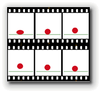
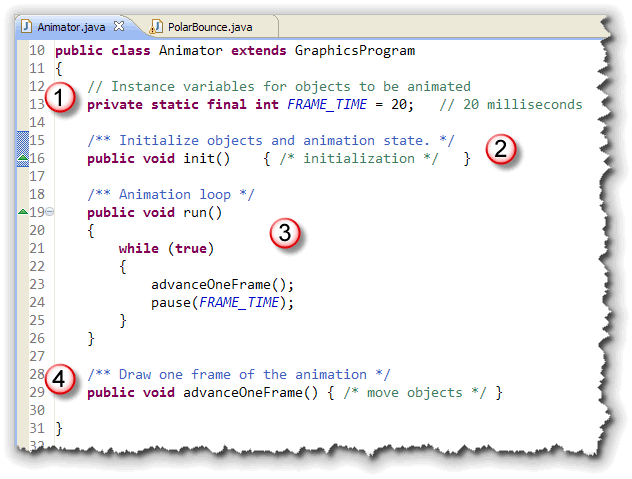
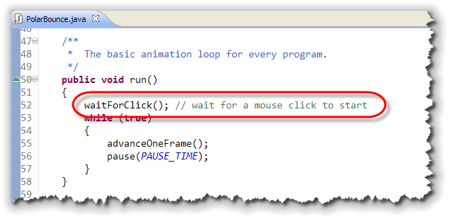
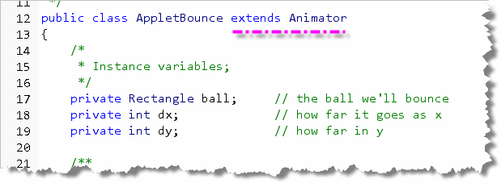
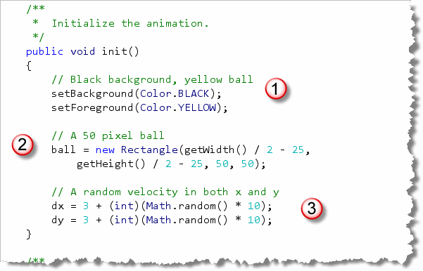
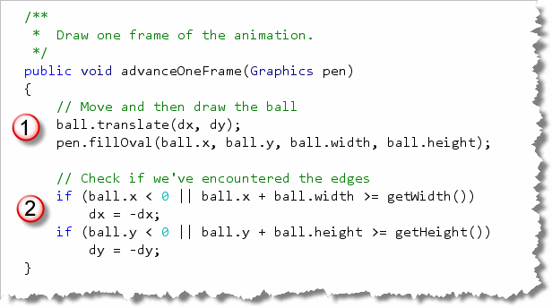
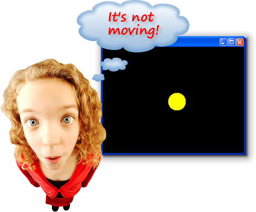

Learning how to handle events,
which you'll do in the next section, will let you create
interactive GUI programs that respond to user input.
Animation, the topic of this section, will let you
write programs that are visually exciting.
 And, when you combine interactivity and animation, you'll have
everything you need to create your own video game empire.
And, when you combine interactivity and animation, you'll have
everything you need to create your own video game empire.
So, just what is animation? Here's a description from the JTF tutorial, along with a couple of illustrations from Wikipedia.

In computer graphics, the process of updating a graphical display so that it changes over time is called animation. Implementing animation typically involves displaying an initial version of the picture and then changing it slightly over time so that the individual changes appear continuous from one version of the picture to the next.  This strategy is analogous to classical film animation in which
cartoonists break up the motion of the scene into a series of
separate frames. The difference in time between each frame is
called a time step and is typically very short. Movies, for
example, typically run at 30 frames a second, which makes the
time step approximately 33 milliseconds.
This strategy is analogous to classical film animation in which
cartoonists break up the motion of the scene into a series of
separate frames. The difference in time between each frame is
called a time step and is typically very short. Movies, for
example, typically run at 30 frames a second, which makes the
time step approximately 33 milliseconds.
If you want to obtain smooth motion in Java, you need to use a time step around this scale or even faster.
ACM Graphics Animation
Let's start out by writing the traditional bouncing ball program. Unlike the short GIF animation from Wikipedia, the traditional bouncing-ball program is more like looking down on a ball bouncing around a billiards table, assuming that there is no gravity or friction to slow things down.
Even though it's simple, I still get kind of excited when
I see the ball start bouncing! To make things a little more
interesting, instead of changing the x and
y coordinates of the ball separately, we'll make
use of the ACM GObject method movePolar()
and write our code in terms of direction and
distance.
Polar Coordinates?
 What are polar coordinates? Here's an explanation
from Wikipedia.
What are polar coordinates? Here's an explanation
from Wikipedia.
In mathematics, the polar coordinate system is a two-dimensional coordinate system in which each point on a plane is determined by an angle and a distance.
The polar coordinate system is especially useful in situations where the relationship between two points is most easily expressed in terms of angles and distance; in the more familiar Cartesian or rectangular coordinate system, such a relationship can only be found through trigonometric formulation.
Of course, that's just what we need to model our bouncing ball!
The Basic Structure
The basic structure for every animation program that
uses the ACM class libraries is always the same:

Here's what the parts do:- Instance variables: the objects that you're going to move need to be defined as instance variables, since you'll interact with them inside several different methods. You'll also normally initialize the frame rate, as I've done here: 20 milliseconds means that the animation will be drawn at around 50 frames per second.
- Initialization: the
init()method is used to set up the initial state of your objects, and to initialize the parameters for your animation, such as speed and direction. - Running: the
run()method is used to animate the program. Usually, however, you'll use exactly the same version of the method, which consists of an endless loop. The real work of animating the objects is done inside youradvanceOneFrame()method. Thepause()method is used to make sure that the frame stays on screen for a certain amount of time. - Draw a Frame: the
advanceOneFrame()method is responsible for moving each of the animated objects, and adjusting their state (such as speed or direction) as necessary.
Not shown here is the main() method. As you recall,
every ACM program has a main() method that creates
an instance of your program and then starts that instance
running. I've left it out of this illustration because it
doesn't directly have to do with the animation.
Now, let's look at each of these in terms of our PolarBounce program. You can find the source code in this chapter's code folder. Go ahead and open it in DrJava.
Instance Variables
Here are the instance (or program-wide) variables used in
PolarBounce:
 Notice that:
Notice that:
- A
GOvalobject is used for the ball that will be bounced around the screen. - Both the distance the ball travels and the direction
(as a polar angle between 0 and 360 degrees) are
represented as
doublevariables.
As with the "skeleton" code, the frame time is defined as a constant integer. Remember that twenty milliseconds will result in a nominal fifty-frames-per-second animation.
Initialization
The first part of the initialization method initializes the
screen itself:
 In addition to setting the background color to black,
I added a
In addition to setting the background color to black,
I added a JLabel to the top panel, so that
the user knows to kick off the animation by clicking the
mouse. (You'll learn about this shortly in Section 8.6—Meet
the Widgets.)
The next part to be initialized is the ball itself. I want
a 50-pixel solid yellow ball:
 After the ball is created, its added to the center of
the screen.
After the ball is created, its added to the center of
the screen.
The last part to be initialized is the direction and
distance:
 I've used random numbers to initialize both of these values.
To start with a random direction, I initialized that to
a value between 0 and 360. To make sure that the ball is always
moving, even if slowly, I used an expression that will always be
between 2 and 12.
I've used random numbers to initialize both of these values.
To start with a random direction, I initialized that to
a value between 0 and 360. To make sure that the ball is always
moving, even if slowly, I used an expression that will always be
between 2 and 12.
Running
The running loop is almost exactly like the one
I showed you in the animation skeleton earlier:

The only difference is the use of the ACMwaitForClick()
method before entering the loop. You can call this method without
activating any of the other event-handling steps you'll meet
in the next section.
Advancing the Frame
To animate the ball, we need to:
- move it,
- and then check for the results.
If our move results in a collision with either the walls (on the sides) or the floor or ceiling, then we need to adjust the direction in which we're moving in anticipation of the next frame, coming up 20 milliseconds from now.
The code to move the ball is pretty straightforward; it just
uses the movePolar() method as I discussed before:

To see if we "hit the wall", the calculations are a little
easier to read, if we create variables for the left, top, right
and bottom edges of the ball. You can write the code without
these extra variables, but then your Boolean conditions are
a little "noisy":

With the variables, the conditions are pretty simple. If you've
hit the left wall (left < 0) or the right
wall (right >= getWidth()), then you need
to adjust the angle by subtracting the current directions
from 180:
 Of course that means you may end up with a negative angle
(when the current direction is greater than 180), but the
Of course that means you may end up with a negative angle
(when the current direction is greater than 180), but the
movePolar() method is smart enough to handle
that, and automatically adds 360.
When you hit the floor or the ceiling, you perform a similar calculation, only instead of subtracting from 180, you subtract from 360.
You can run the PolarBounce applet in a separate window by clicking the link in this sentence.
Try It Yourself
Let's make a couple of changes. Instead of a 50-pixel yellow ball,
let's change that to a 20-pixel red ball. Also, when the ball hits
the side walls, speed it up a little and when it hits the top and
bottom walls, slow it down. You can click here to see how if
you get stuck.

The Animator Applet
To animate a traditional, non-ACM applet is a little more complicated,
because you have to deal with resizing and screen flicker.
To make this a little simpler, I've created a version of the
Applet class, named Animator,
which you can use whenever you
want to create an animated applet.
To use Animator, just create a regular Java applet,
except instead of extending Applet, you extend
Animator. Then, you follow almost the same
basic pattern as the animated ACM application, with these few
differences:
- The
advanceOneFrame()method takes aGraphicsparameter, just like the regular appletpaint()method. - You don't need a
run()method at all. Instead, you just draw your frame like you would inside the appletpaint()method. - To specify how often to repaint the screen, call the
setFrameRate()method, and supply the number frames you want to have painted each second.
Let's take a quick look at the AppletBounce
program, which uses Animator to create
a traditional applet version of the bouncing-ball program.
I'll follow the same basic structure as the previous example,
so it will be easy for you to compare the two programs.
(You'll find AppletBounce.java in this chapter's
code folder.)
Instance Variables
Let's start by comparing the instance variables used in
PolarBounce with those of AppletBounce shown here:

- First, notice that the program extends
Animatorinstead ofAppletas I previously mentioned. - Next, since we aren't using the ACM classes, we have no graphical
GOvalobject to represent the ball. Instead, we'll use ajava.awt.Rectangleobject to represent the bounding box that will enclose our ball when we paint it on the screen. Then, when we draw the ball, it will be up to us to draw an oval. - Also, since we aren't using the
GObjectclass, we don't have amovePolar()method. That means that to animate our ball, we'll need to adjust the position of the rectangle. The two variablesdxanddywill contain the distance used to move in each of the two axis.
Note also that since the applet graphics units are in pixels,
I've used int for the variable types. In ACM
graphical programs, coordinates are type double
instead.
Initialization
The initialization of the two programs is also similar. Here's
the code for the applet version:

- The applet background is also set to black, but, since there
is no
waitForClick()method, I didn't bother to put up aJLabel. Also, instead of filling theGRectwith yellow, I set the foreground to yellow instead, so that the ball will automatically be painted in that color. - To create the ball, I just create a
Rectangleobject, positioned in the center just like with the ACM version. Since my ball is not a visible component, I don't have to add it to the surface of the applet, like I did with theGRectversion of the ball. - Finally, instead of initializing distance and
direction, I need to initialize the
dxanddyvariables. The calculations shown here seem to result in reasonable speed, but you can adjust them as you see fit.
Painting
To display the ball, we put our painting code inside the
advanceOneFrame() method, similar to PolarBounce.
The difference is that in the applet version, we have to paint
the ball, while in the ACM version, the "ball" object
(a GOval) drew itself. Let's look at the code we need:

We first use theRectangle translate()
method to adjust the position of the ball's bounding box
and then, a regular fillOval() just draws the ball.
To see if the ball hits the edges, the applet version also uses a
pair of if statements, comparing the values in the
bounding box with the width and height of the applet. In this
version, though, instead of changing the direction, we just
reverse the values of dx or dy so that
the next frame moves the ball in the opposite direction.
Your Turn: Adding Some Action

Go ahead and compile and run AppletBounce. What happens? That's right, it's not moving. That's because the Animator
class sets its frame rate to 0 when it starts up. To get things moving,
all you have to do is add the following line to the bottom of the
init() method.
setFrameRate(24);
This will set the frame-rate to 24 FPS or Frames Per Second. If you want your ball to bounce faster, use a larger number; if you want it to go slower, them use a smaller number.
Try It Yourself
Make this change to AppletBounce and then run it.
Other Animator Features
There are several other things you can do with Animator
based applets. Here are two:
- You don't need to just have a plain white background.
The
paintBackground(Graphics g)method will be called before theadvanceOneFrame()method. - All of the mouse events are already enabled; you
just have to write any event-handlers you
want to add. If, for instance, you add a
void mouseClicked(MouseEvent e)method, you can start the ball bouncing when the user clicks the mouse, just like PolarBounce.

Introducing Animation Summary
- Animation is the appearance of motion implemented by making small changes to the position, size or color of a component at a very rapid rate, typically 20 or 30 times each second.
- In ACM graphical programs, the generic skeleton for an
animated program involves creating the components to
be animated as instance variables and then adding an
animation loop to the
run()method. This loop calls a method which modifies the state of the animated objects and then pauses for a fixed time, while the screen is repainted. - To animate a traditional Java applet, you can extend the
Animatorclass I've supplied, and then override theinit()andadvanceOneFrame()methods. To set the animation speed, call thesetFrameRate()method.